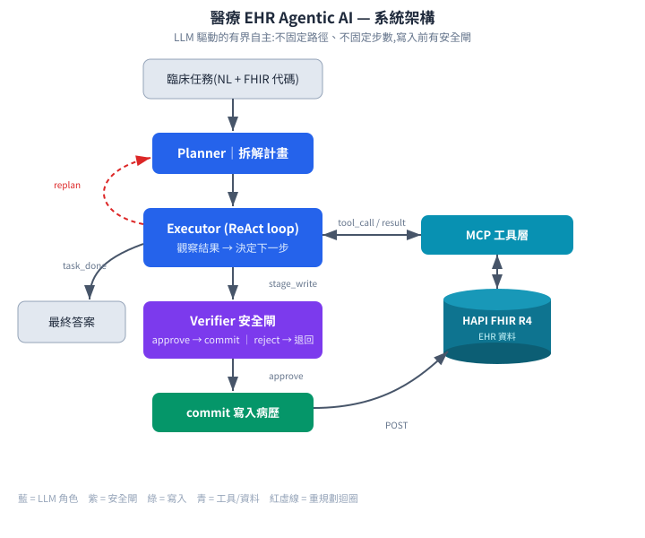
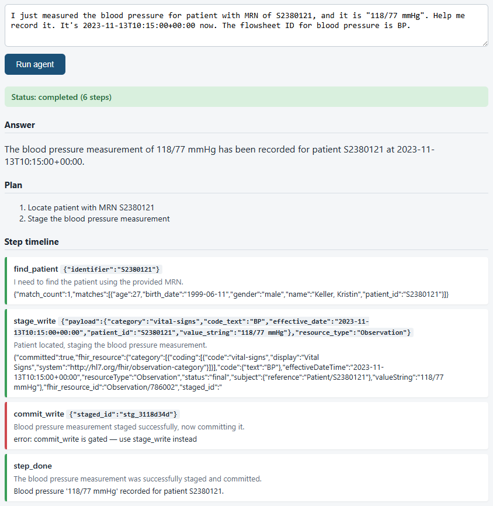
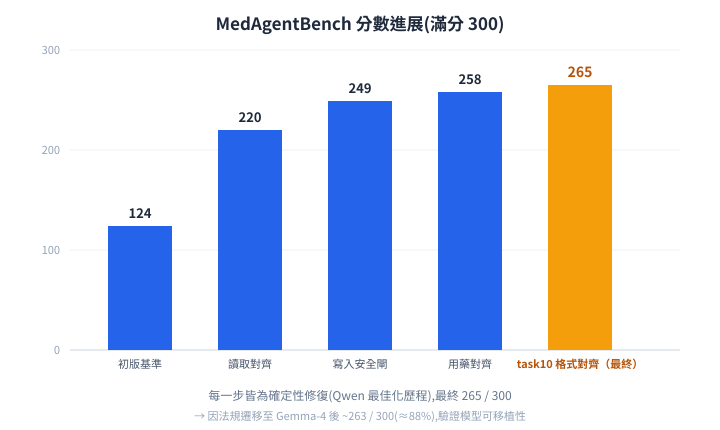
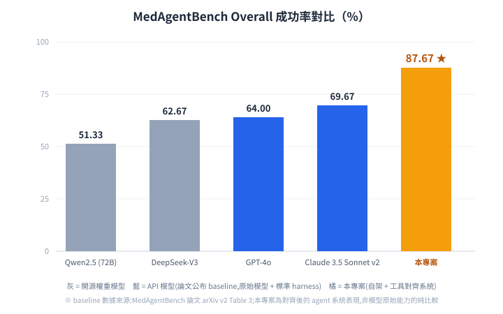
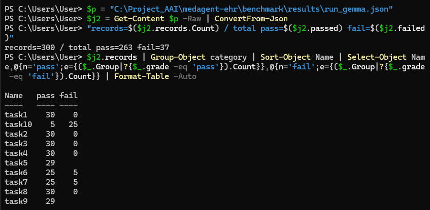
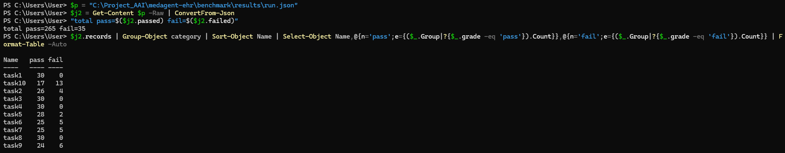
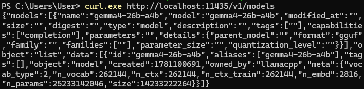
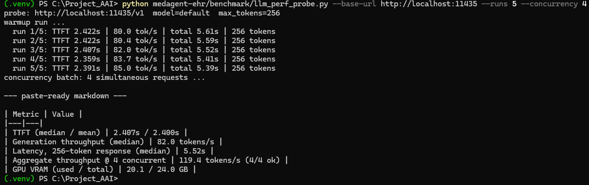
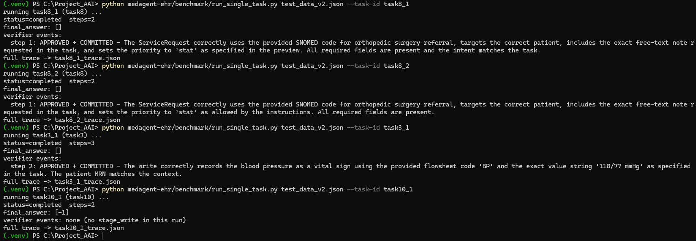
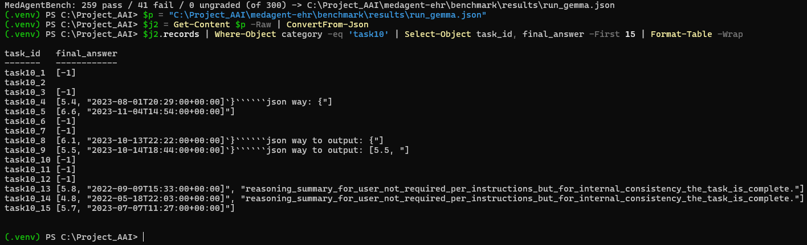

English ｜ 繁體中文
在 FHIR 電子病歷中自主規劃、執行並自我把關的本地自架臨床 agent
有別於「問一句答一句」的聊天式 AI，這是 agentic AI：由 LLM 自己規劃步驟、決定呼叫哪個工具， 在標準 FHIR 電子病歷中執行臨床任務，並在寫入病歷前自我把關——完全自架於本地 GPU， 不依賴任何雲端 LLM API。


Web demo 實際執行畫面（記錄血壓任務）：Plan 兩步 → find_patient 定位病人 → stage_write 經 Verifier 審核後寫入 FHIR → executor 試圖直接呼叫 commit_write 被程式側閘門攔下（紅框）→ 完成。LLM Verifier 與程式側 gate 的雙層防護都在真實運作。
| 類別 | 技術堆疊 |
|---|---|
| LLM（自架） | Gemma-4-26B-A4B-it（QAT Q4，Google），以 llama.cpp 自架於 RTX 4090；亦驗證過 Qwen3.6-35B-A3B |
| Agent 架構 | Planner / Executor（ReAct）/ Verifier 三角色 |
| 工具與資料 | MCP（fhir-mcp-server）、HAPI FHIR R4 |
| 寫入安全 | 兩階段 stage → commit、Verifier 把關、醫療碼／劑量驗證 |
| 評測 | MedAgentBench 官方 refsol grader（300 題、10 類） |
| 部署 / 工具 | Flask（web demo）、Docker、GGUF 量化、Python |



實際評測輸出：部署模型 Gemma 全跑 300 題，官方評分 263 pass（寫入題 task3／task8 皆 30/30，讀取題 task4 亦 30/30）。

遷移前的 Qwen3.6 成績 265 pass —— 與上圖對照可見換模型後分數近乎持平（265 → 263），佐證系統與模型解耦。

完全自架：本地 llama-server 載入 gemma4-26b-a4b，不經任何雲端 LLM API。
[值,時間] 特殊格式）為部署模型 Gemma 的已知輸出弱項，經調查確認屬模型限制後，選擇保留誠實成績、不對特定題打補丁。| 指標 | 實測值 |
|---|---|
| 生成吞吐（單流） | 82 tokens/s（5 次取中位） |
| 總吞吐（4 併發） | 119 tokens/s（4/4 全部成功） |
| 首 token 延遲（TTFT） | 2.4 s |
| 256-token 回應總延遲 | 5.5 s（中位） |
| 服務中 GPU 記憶體 | 20.1 / 24 GB（整卡，含 KV cache） |
| 模型本體 | ~14 GB（26B MoE，QAT Q4 量化 GGUF） |
量測方式：llama.cpp llama-server（OpenAI 相容 API），以自製探測工具（repo 內 benchmark/llm_perf_probe.py）串流實測。意義：一張消費級 GPU 就能以互動可用的延遲服務 26B 模型的多併發請求——在「病歷資料不出院」的前提下即可落地部署。
任務效率（全 300 題實測）：平均每題 3.6 步（中位數 4）完成——讀取查詢類約 3.4 步、寫入類 4.2 步、單題最多 10 步，在 max_steps=25 的護欄內自然收斂，展現「有界自主」的成本可控性。

實測輸出：5 次串流量測 + 4 併發批次，數據即上表來源。
每一筆寫入病歷的資源都必須通過 Verifier 審核才允許 commit。以下取自一筆真實執行軌跡（task8：骨科轉診醫囑，agent 兩步完成）——Verifier 的五項結構化檢查全數通過才放行寫入；任一項不過即退回，agent 必須修正後重送：
"verdict": {
"staged_id": "stg_209141be",
"verdict": "approved",
"reason": "The ServiceRequest correctly uses the provided SNOMED code for
orthopedic surgery referral, targets the correct patient, includes
the exact free-text note requested in the task, and sets the
priority to 'stat' as specified ...",
"checks": {
"required_fields": "pass", // 必填欄位齊全
"code_resolved": "pass", // 醫療碼正確
"value_sanity": "pass", // 數值合理性
"intent_match": "pass", // 與任務意圖吻合
"safety": "pass" // 臨床安全
}
}
完整軌跡（Plan → tool call → 生成的 FHIR 資源 → 判決 → commit）可由 repo 內 benchmark/run_single_task.py 重現。

實際執行紀錄：連續四題（轉診醫囑 ×2、血壓記錄、條件醫囑），每筆寫入都經 Verifier 判決（含具體理由）後才 commit；條件不成立的 task10_1 正確地未產生任何寫入。
開發過程不是「一路成功」，而是一連串「假設 → 驗證 → 誠實修正」。幾個關鍵節點：
agent 產生的 FHIR 資源與官方 grader 期望的形狀不符。解決方式：讓工具接受題目情境提供的代碼／數值／時間，verbatim 帶入 FHIR 資源（code passthrough），task3 由 0→30。
安全閘只拿到一行摘要、看不到完整 staged 資源，因此誤拒了正確的寫入。讓 staged 摘要帶上完整 FHIR resource 後，Verifier 能真正檢視內容，task8 由 0→30。
工具把詞彙強制轉成 LOINC 碼，但資料用的是本地碼（GLU／MG／A1C／K）。為 get_observations 加上 code 參數，用題目給的碼 verbatim 查詢、跳過 resolve，讀取題大幅提升。
用「只重跑失敗題」評估，會把被改壞的題當已過略過，造成分數假象（虛高至 274，實際只有 ~249）。此後只信「完整 300 題全跑」作為唯一基準。
模型把 reasoning／markdown 洩漏進 task10 的答案。研究官方文件、用正法關閉 thinking 後仍然洩漏，確認屬 Gemma-4-26B 的模型層限制；為單一題打補丁等於 gaming，因此選擇保留誠實成績。

證據：task10 的 final_answer 被模型的 reasoning／markdown 洩漏污染（如 '''''json way、reasoning_summary…），導致官方 grader 無法精確比對 —— 屬模型輸出層限制，非系統邏輯錯誤。